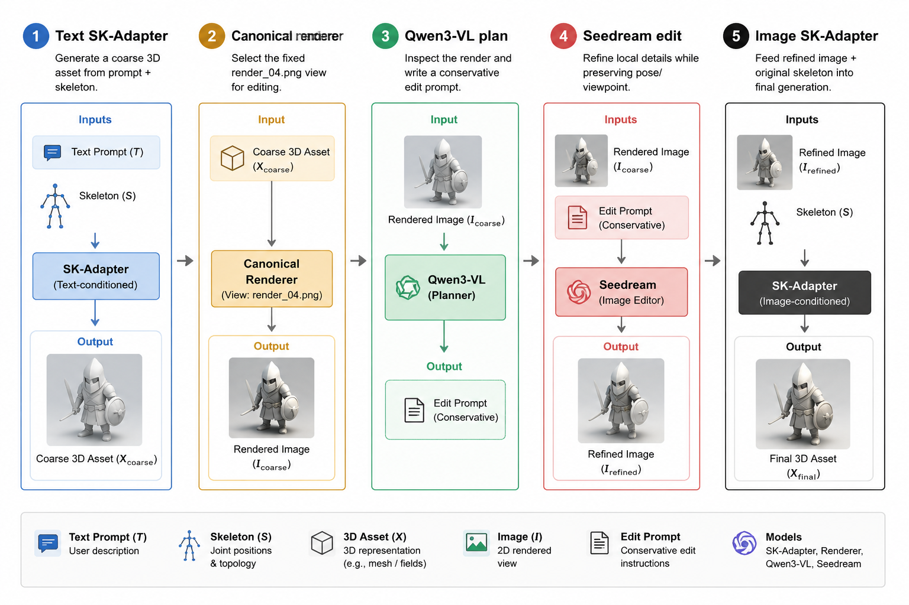
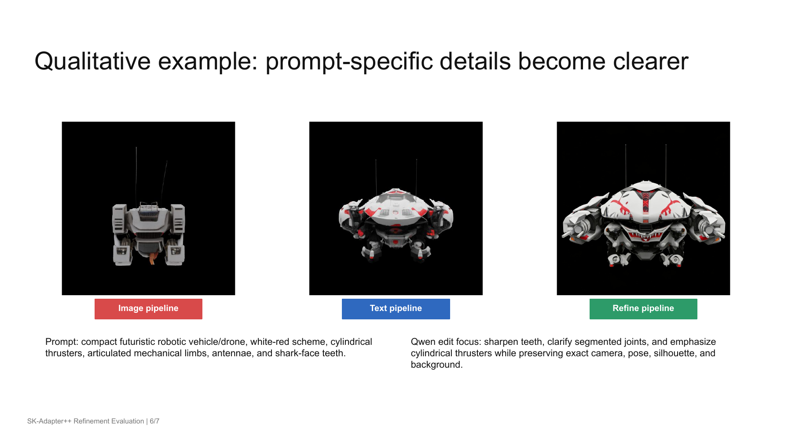

- Yuzhuo Ao: trained and debugged the SK-Adapter model.
- Yuanzhong Chen: explored external LLM integration and image editing optimization.
- Tingsen Liu: prepared demonstration results and led workflow construction.
- Zitian Wang: set up the evaluation framework and benchmarking.
CS-503 Course Project
SK-Adapter++: Enhancing Skeleton-Guided Native 3D Generation via Modality Compatible SK-Adapter
A lightweight refinement loop that combines precise 3D skeleton control with the visual fidelity of image-conditioned native 3D generation.
Baseline
Refined
Baseline
Refined
Abstract
Recent skeleton-guided native 3D generation models such as SK-Adapter provide precise structural control by injecting 3D skeleton tokens into a frozen Trellis backbone. This makes text-and-skeleton generation structurally faithful, but the visual quality remains bounded by text-to-3D generation: textures can be blurry, prompt-specific details may be missing, and local geometry can be inconsistent. Image-conditioned 3D generation offers stronger visual fidelity, but it assumes the user already has a reference image aligned to the target skeleton.
We propose SK-Adapter++, a modality-compatible pipeline that bridges this quality-control tradeoff. Starting from only a text prompt and a skeleton, we generate a coarse skeleton-aligned 3D asset, render a canonical view, use a vision-language model and image editor to refine local semantic details, and feed the refined image plus the original skeleton into a newly trained image-conditioned SK-Adapter. Our experiments indicate that this refinement loop improves text-image alignment and preference-style visual quality while keeping the refinement constrained to the original pose, viewpoint, silhouette, and skeleton.
Problem
Artists and 3D content creators need both controllability and fidelity. Text-to-3D methods can generate an object quickly, but text alone cannot reliably specify exact articulations such as bent limbs, unusual topologies, or pose-specific structural constraints. Image-to-3D methods usually produce sharper appearances, but they require a compatible reference image. In practical creative workflows, users often have a concept and a target skeleton, not a perfectly aligned image-skeleton pair.
The project studies whether a single skeleton-compatible canonical render can be edited into a stronger image-to-3D condition without breaking the structural constraints that made the original SK-Adapter generation useful.
Method

1
Coarse 3D Generation
Generate an initial 3D asset from the prompt and input skeleton using the original text-conditioned SK-Adapter.
2
Canonical Render Refinement
Select a fixed render view, ask Qwen3-VL to produce a conservative edit plan, then apply Seedream to clarify details while preserving pose and viewpoint.
3
Image + Skeleton Regeneration
Feed the refined image and original skeleton into an image-conditioned SK-Adapter trained on Objaverse-TMS with a frozen image-conditioned Trellis backbone.
The image-conditioned adapter replaces text features with DINOv2 image features while retaining the skeleton encoder and cross-attention injection strategy. The Trellis backbone remains frozen, the GRPE-based skeleton encoder produces topology-aware skeleton tokens, and zero-initialized projections allow the adapter to begin training without disrupting the pretrained generative prior.
Experiments
We compare the text-conditioned SK-Adapter baseline with the proposed refine pipeline across six metrics: CLIP (mean and max view) for text-image alignment, PickScore (mean and max view) for preference-style visual quality, Anymate Chamfer distance for skeleton/rig alignment, and DINO-KID for visual distribution similarity.
| Metric | Trend | Base | Refined | Delta | Relative | Conclusion |
|---|---|---|---|---|---|---|
| CLIP mean view | ↑ | 26.5887 | 26.8979 | +0.3091 | +1.16% | improved |
| CLIP max view | ↑ | 28.6023 | 29.0199 | +0.4176 | +1.46% | improved |
| PickScore mean view | ↑ | 20.9128 | 20.9554 | +0.0425 | +0.20% | improved |
| PickScore max view | ↑ | 21.4689 | 21.5596 | +0.0907 | +0.42% | improved |
| Anymate CD avg | ↓ | 0.2354 | 0.2146 | −0.0208 | −8.83% | improved |
| DINO-KID mean | ↓ | 0.8924 | 0.8898 | −0.0026 | −0.29% | improved |

Analysis
The main positive result is that conservative 2D refinement can improve prompt-specific appearance without serving as a replacement for skeleton control. The strongest gains appear in semantic and preference-style metrics, which matches the intended role of the refinement step: sharpen local details, clarify material and part cues, and make the image condition more useful for the final image-conditioned generation stage.
The failure cases are also informative. Topological confusion can occur when visually similar articulated classes share local structures, such as spider-like and scorpion-like leg layouts. Semantic orientation errors can also appear when a 2D editor swaps head and tail cues during refinement. These issues suggest that the refinement planner should include explicit semantic-part verification before the final generation step.
Conclusion and Limitations
SK-Adapter++ adds a lightweight refinement loop between coarse text-and-skeleton generation and final image-and-skeleton generation. In the current evaluation, the refine pipeline achieves the best CLIP and PickScore among the tested pipelines, suggesting improved semantic alignment and visual preference quality. The project's main takeaway is to use 2D refinement as a conservative semantic correction step, not as a replacement for native 3D skeleton control.
The current limitations are clear: the refine pipeline still needs a confirmed DINO/KD rerun, skeleton Chamfer evaluation is unavailable for the refined outputs, and the end-to-end workflow requires stronger automation. Future work should add an LLM-based semantic verifier, complete skeleton alignment evaluation, and expand the benchmark beyond the current 50-sample refine aggregate.
Individual Contributions
References
[1] Xiang et al. Structured 3D Latents for Scalable and Versatile 3D Generation, 2025.
[2] Wang, Ao, Wu, and Tang. SK-Adapter: Skeleton-Based Structural Control for Native 3D Generation, 2026.
[3] Chen et al. Seedream 4.0: Toward Next-Generation Multimodal Image Generation, 2025.
[4] Oquab et al. DINOv2: Learning Robust Visual Features without Supervision, 2024.
[5] Xu, Yang, and Yang. SKDream: Controllable Multi-view and 3D Generation with Arbitrary Skeletons, CVPR 2025.